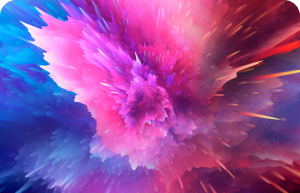
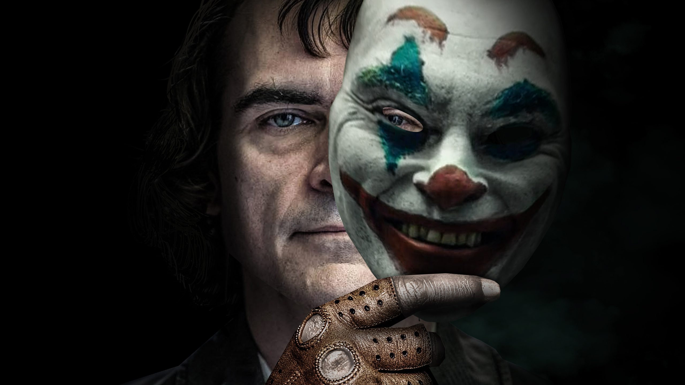
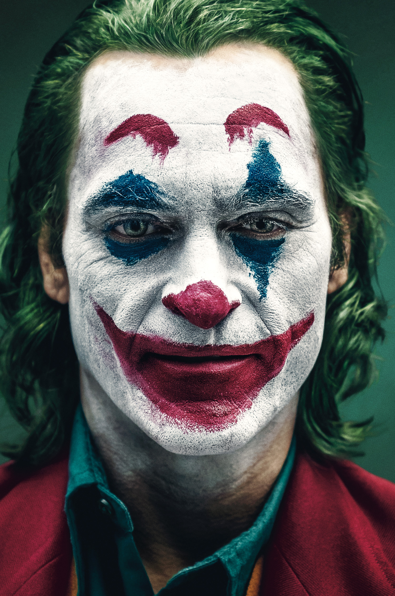

Batman
Bruce Wayne es el único personaje que se identifica como Batman y aparece en Batman, Detective Comics, Batman y Robin, y Batman: The Dark Knight. Dick Grayson vuelve al manto de Nightwing
Ver más


Harley Quinn
La creación de Harley Quinn fue una idea de último minuto propuesta por el escritor estadounidense Paul Dini para modificar una escena del vigésimo-segundo episodio de Batman: la serie animada
Ver más


Joker
Arthur Fleck adora hacer reír a la gente, pero su carrera como comediante es un fracaso. El repudio social, la marginación y una serie de trágicos acontecimientos lo conducen a caer en el mundo del crimen.
Ver más